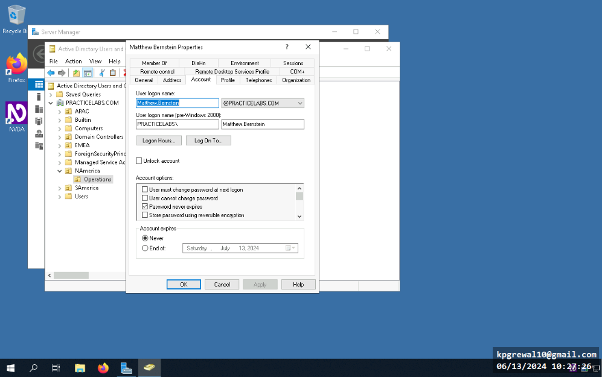
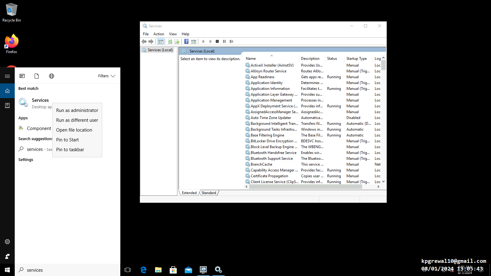

Password Policies
Understanding password policies establishes a foundational knowledge of cybersecurity practices. It ensures that individuals are equipped with essential skills to implement and manage secure password policies effectively.

Caption for Password Policy 1
Caption for Password Policy 2
Data Storage
Working with Microsoft SQL Server Management Studio 2017, I created, declared, pulled, removed and added entries into the database. Databases were also normalized to rid them of outliers.
Declared multiple policies for passwords on Windows
Set more complex policies such as expiration date, password expiration etc

Set more complex policies such as expiration date, password expiration etc
Implement Device Security with Anti-Malware Apps
Execution of contemporary anti-malware practices through the use of microsoft defender
Caption for Password Policy 1
Configuring Mobile Devices
Emulated and configured mobile device to support internet explorer 6.
Caption for Password Policy 1
Network Based Anti Malware
Deployed Kaspersky antimalware from an admin workstation to a regular user’s PC on the same network, ensuring consistent security measures..
Caption for Password Policy 1
Caption for Password Policy 2
Multi Factor Authentication
Established multi-factor authentication using smart cards for designated users on the network, enhancing access security protocols.
Caption for Password Policy 1
Caption for Password Policy 2
Caption for Password Policy 2
Managing Application Delivery Methods
Managed application delivery through Group Policy for the automated installation of OpenOffice Writer, permitting software management across multiple systems.
Caption for Password Policy 1
Caption for Password Policy 2
Caption for Password Policy 1
Caption for Password Policy 2